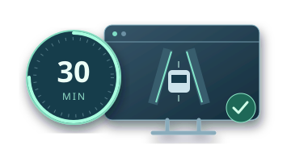
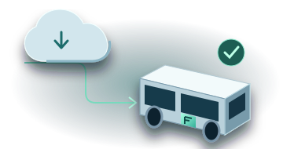
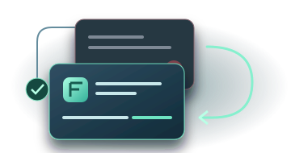

FURIVE OS · 차량 소프트웨어 배포·실행 관리
자율주행을 더 빨리 개선하고,
차량에 원격 업데이트하세요.¶
Furive OS는 Furive 지원 차량의 소프트웨어 배포·실행을 관리합니다. 팀이 만든 프로그램을 원격으로 업데이트하고, 차량에서 실행·상태 확인·복구까지 맡습니다.
쓰던 GitHub 저장소 · 언어 · 프레임워크 그대로
클라우드새 버전 배포차량으로 전송
Furive OS
버전 적용전송 중
실행 관리대기
Furive 지원 차량

01 · 빠른 시작약 30분, 설치부터
약 30분, 설치부터
자율주행 실행까지
02 · 개발 환경 유지
쓰던 GitHub 저장소 그대로

03 · 원격 배포
여러 차량에 원격 배포

04 · 실행 확인·복구
실패하면 이전 정상 버전으로
업데이트 전보행자가 도로로 들어옵니다.
<>쓰던 GitHub 저장소 · 코드 편집● ● ●
EXPLORER⌄ planningpedestrian_stop.cpppedestrian_stop_test.cpp
C++ pedestrian_stop.cpp 수정 중 ●
12
// 보행자가 진입할 경로 확인13
auto crossing = pedestrian_path();−
brake_at = fixed_distance;+
brake_at = stopping_distance(speed)+
+ safety_margin;16
if (intersects(crossing, brake_at)) {17
plan_deceleration();18
}TERMINAL
$ git commit -am "Fix pedestrian braking"$ git push origin fix/pedestrian-stop코드 수정 중…
개발자 PCGitHub · 전송 대기
⑂ 감속 동작 개선의사코드 예시
푸시한 코드가 배포본이 되기까지
Push · 변경 코드를 GitHub로 전송
클라우드
01 전송02 차량에 적용03 완료
새 버전을 보냅니다.
01 / 05
반복 배포 · 여러 차량에 병렬로개선할 때마다,
개선할 때마다,
여러 차량에 새 버전을.
코드를 고치고 검사하면, 여러 Furive 지원 차량으로 병렬 배포합니다. 주행 데이터를 로깅하고, 발견한 문제를 다음 업데이트에 반영합니다.
개선 흐름 다시 보기 ↗01코드 수정
02자동 검사
03병렬 배포
04주행 확인
클라우드 배포개선 01
지원 차량 01기존 버전 실행
지원 차량 02기존 버전 실행
지원 차량 03기존 버전 실행
주행 확인 → 다음 개선 → 다시 배포
FURIVE OS · 핵심 관리 도구
업데이트부터 실행까지,
차량 소프트웨어를 관리합니다.¶


Furive OS 사용 화면
함께 쓰는 부가 프로그램